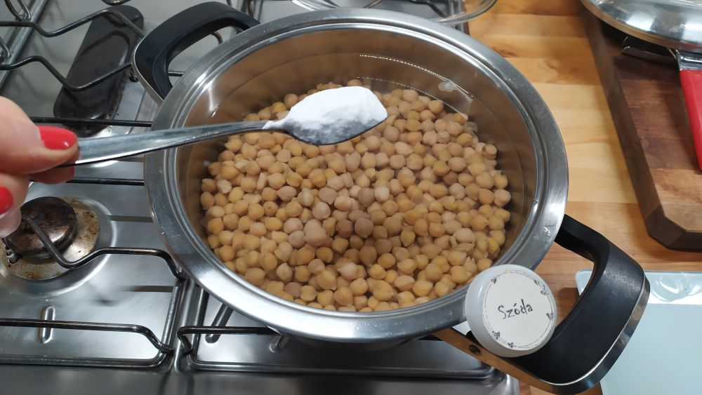
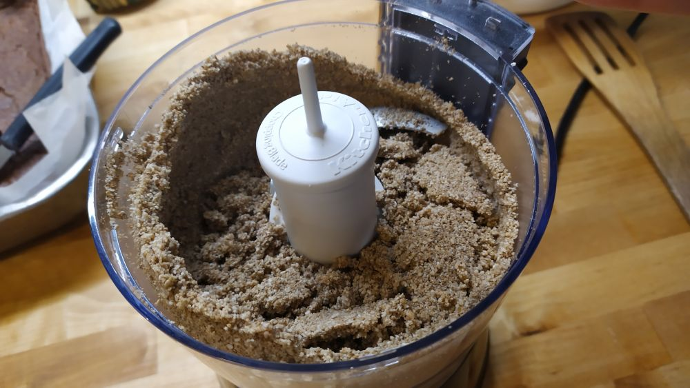
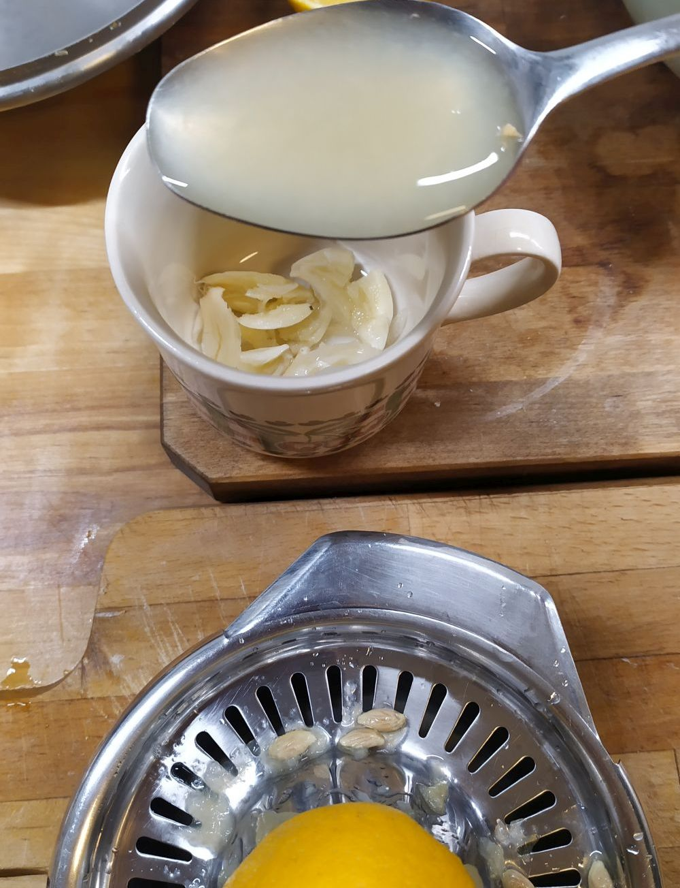
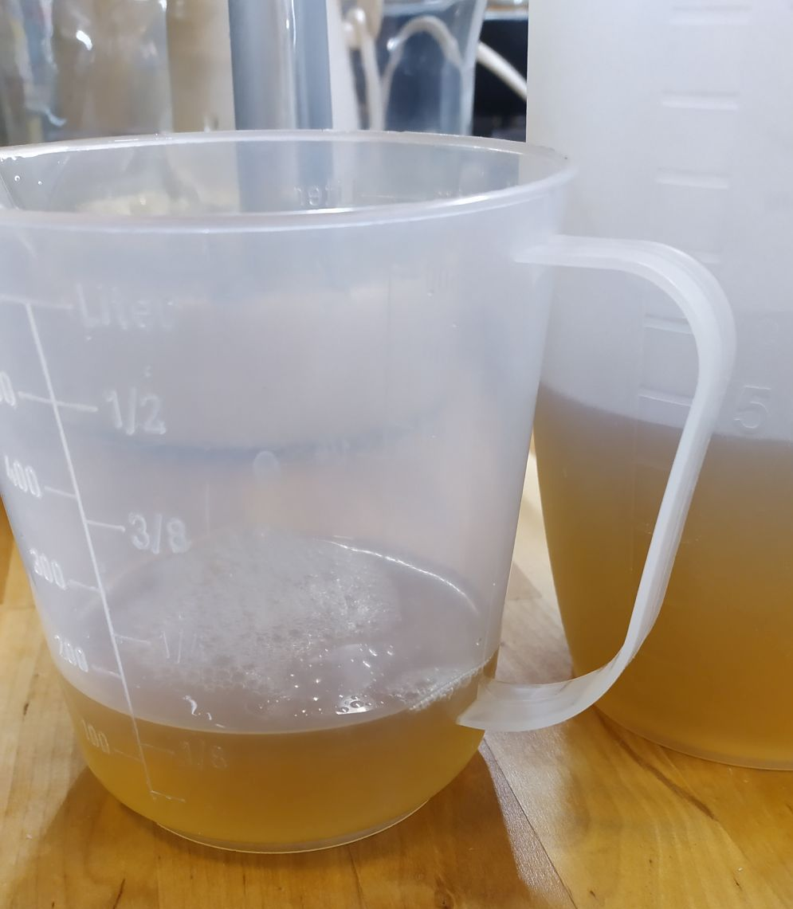
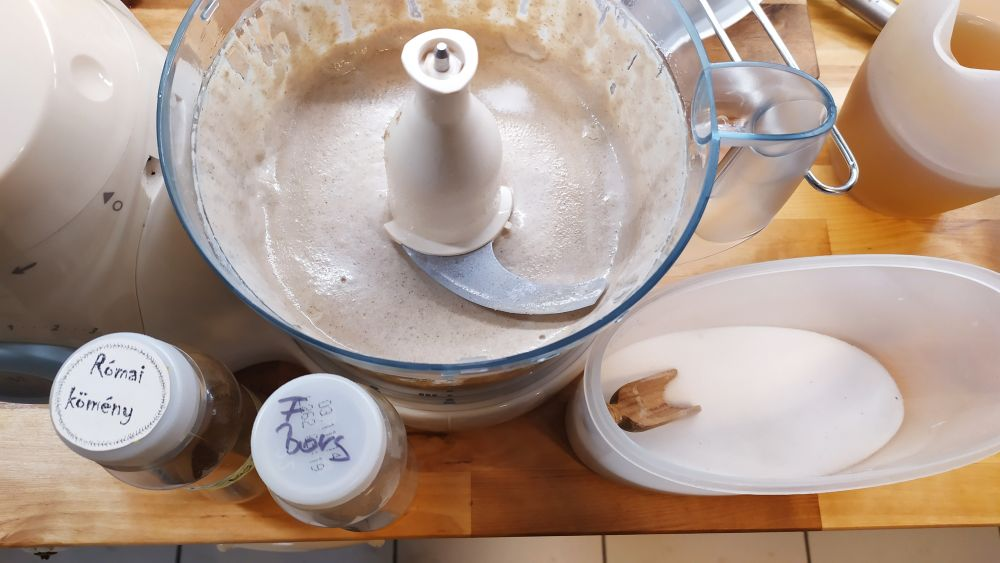

Hozzávalók
- egy kis konzerv (240g nettó tömegű), vagy 100g
száraz csicseriborsó - a konzerv levét ne öntsd ki, kelleni fog!
- ha konzerv a csicseriborsó, akkor 1kk szódabikarbóna
- 100g szezámmag (vagy az egyszerűség kedvéért kész tahini)
- 1,5tk őrölt római kömény
- 1-2 gerezd fokhagyma
- 1,5ek citromlé
- 1dl olivaolaj
- fehérbors
- só

Ha száraz csicseriborsód van, akkor egy éjszakára áztasd be, utána 1,5-2 óra alatt főzd olyan puhára, hogy a
héja már elváljon tőle.
Amennyiben elfelejtetted előző éjszaka beáztatni, akkor sincs gond, 2-3 óra alatt meleg vízbe áztatva is jó
eredményt lehet elérni.

Ha konzerved van, akkor szűrd le, és egy lábasban nagyjából 20 percre tedd fel főni 1 kiskanálnyi
szódabikarbónával (ez megemeli a víz pH értékét és ezzel felpuhítja a héjat, így utána sokkal krémesebb lesz a
hummusz).

A fenti két opció közül bármelyiket is választottad, ha így néznek ki a csicserik a lábasban, akkor az már
jó, leveheted a tűzről.
szódabikarbónával főzted, akkor a főzővizet öntsd ki és öblítsd át a lábas
tartalmát hideg vízzel, hogy biztos ne maradjon utóíz.
Ha simán főzted, akkor is szűrd le, de a főzővizet ne dobd ki!

Ha nem kész tahinid van, akkor a csicseriborsó fővése tökéletes alkalom arra, hogy megpirítsd a szezámmagot
és pasztát készíts belőle. Tedd egy serpenyőbe, és paddig pirítsd, amíg zsemleszínű nem lesz (a képen azért
sötétebb, mert épp hántolatlant tudtam csak venni). Ezután kicsit félreteheted hűlni.

Szórd a szezámmagot egy kis késes aprítóba, majd indítsd el.

Amikor ezt látod, akkor adhatsz hozzá 2-3 evőkanál hideg vizet (ennek nem tudom milyen tudományos magyarázata
van, de sokkal lazább/könnyebb lesz tőle a paszta).

Ha így néz ki, akkor jó, nem kell tovább gyilkolni a gépet. :)

A fokhagymát pucold meg és kicsit, akár egy kés oldalával nyomd szét.

Add hozzá a citromlevet és hagyd így pár percet állni, ettől a nagyon durva fokhagymaíz kicsit gyengédebbé
válik.

Amíg ázik a fokhagyma, addig mérj ki ~1,5 decit a főzővízből/konzerv levéből (a többit még ne dobd ki).

A fokhagymás citromot és a tahinit tedd egy konyhai robotgépbe, majd indítsd el.

Ha homogenizálódott, akkor szórd bele a római köményt, ízlés szerint sót és fehérborsot, majd egy kicsit így
is tekerd fel a gépet.
Add hozzá a csicseriborsót, olivaolajat és a főzővizet/konzerv levét. Ezután indítsd
el a gépet és addig hagyd bekapcsolva, amíg a megfelelően krémes állagot meg nem kapod. Ha ezzel a
folyadékmennyiséggel esetleg túl sűrűnek találod, akkor nyugodtan adj még hozzá olivaolajat és/vagy főzővizet.

Amikor már így néz ki a robotgép tartalma, kóstold meg, esetleg szabd még a saját szád ízére a
fűszerezést (őrölt füstölt chili, friss petrezselyem, akármi) és már kész is vagy!